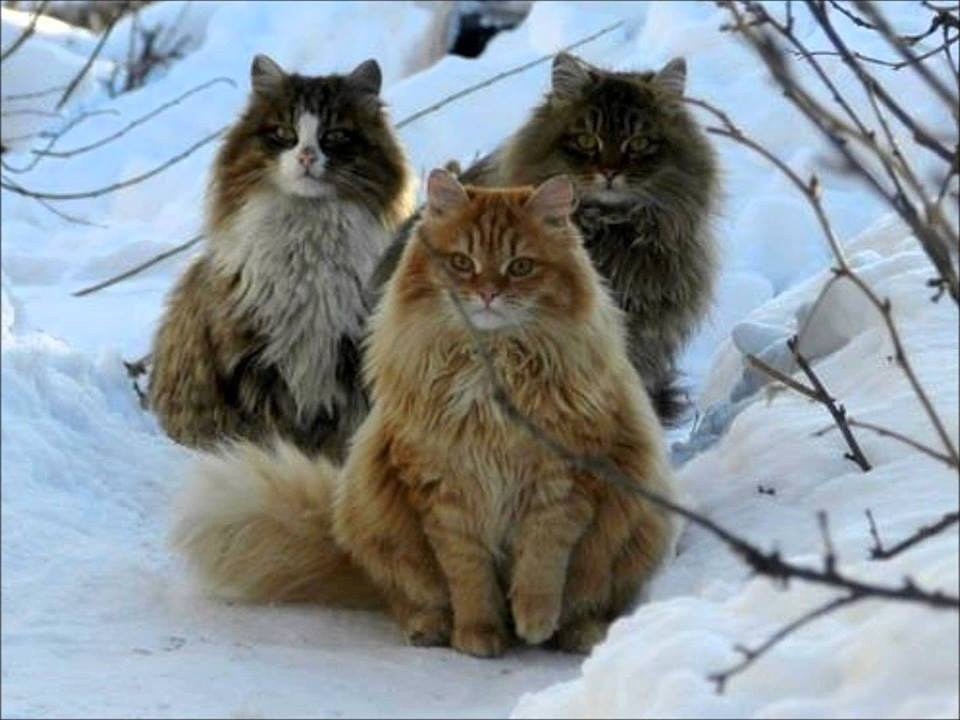
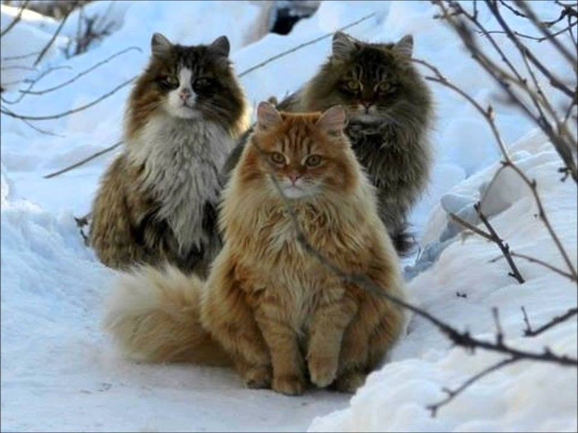

КОГДА ВЫБОР СЛОЖНЫЙ!
Не принимайте поспешных решений в выборе животного. Помните, что это впервую очередь ваш друг и член семьи, а уже потом домашнее животное. Будьте готовы к воспитанию, первое время тотальному контролю во избежания порчи имущества. И конечно же финансовым тратам (корм в наше время стоит не малых денег, особенно качественный).